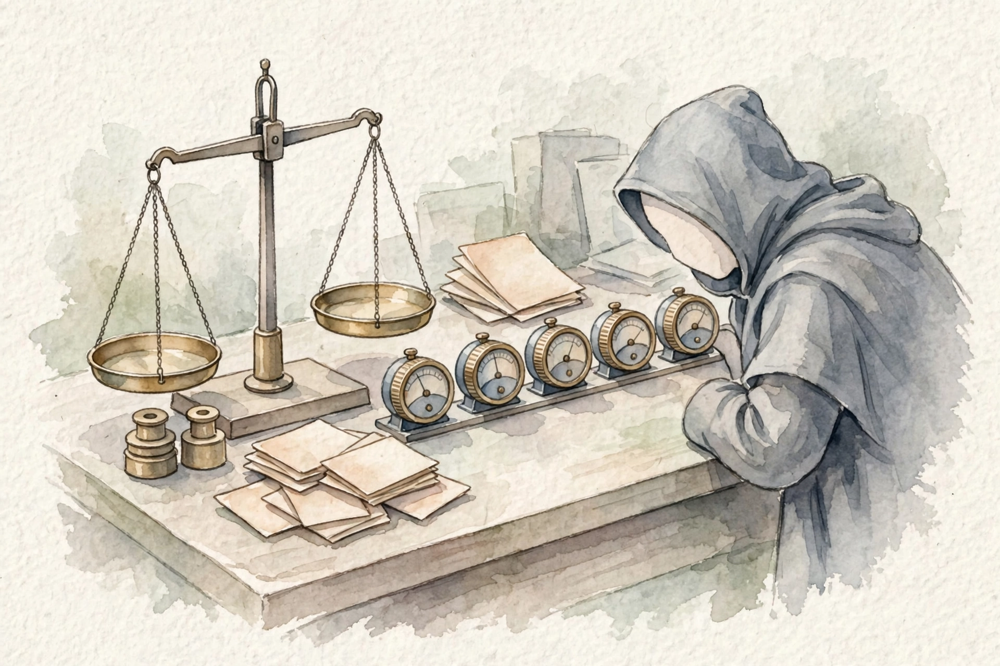

AWS Certified Generative AI Developer — Professional
The machine room behind the AI exam
This companion walks the ML Specialty prerequisite volume end to end: data prep, feature work, model build, honest tests, deployment, and the watch over live models.
Read inward. The claim is the outer shell. Under it: the mechanism, the numbers, a worked scenario, and the exam trap.
Outer layer Claim
Start here
Companion · AIP-C01 prerequisite · narrated from the source volume
The machine room belt
Watercolor: The machine room belt. Original AI watercolor illustration made for this page.
The machine room belt
Mechanism
Companion · AIP-C01 prerequisite · narrated from the source volume
This companion walks the ML Specialty prerequisite volume end to end: data prep, feature work, model build, honest tests, deployment, and the watch over live models.
Companion to the ML Specialty prerequisite volume of the AWS AIP-C01 Study Guide · Source page: prereq-ml-specialty.html
SOURCE / INTERPRETATION: HOW TO READ THE TAGS
From the lesson SOURCE: the idea, and every number beside it, comes from the cited section of the source. The phrasing is the companion's.
Illustration INTERPRETATION: invented by the companion: an analogy, a toy with made-up values, or a what-if. Never source content.
companion INTERPRETATION: companion voice: the idea above the tag is from the source. The generalization below it is the companion's.
Unit 1 · Exam shape
Numbers and limits
Volatile. Quotas, model IDs, and prices move. The prose below was checked against AWS documentation on 2026-09-28. Re-check any quota or price before exam day.
This section states no service quota. Do not memorize a number the text does not give you.
Worked scenario
Work “Start here” against one stem. Name the constraint (freshness, citation, latency, a cost ceiling, or a control that must block) and pick the smallest managed mechanism that meets every constraint.
Exam trap
Illustration INTERPRETATION: invented by the companion: an analogy, a toy with made-up values, or a what-if.
Outer layer Claim
The exam in 30 seconds
This volume follows MLA-C01, AWS Certified Machine Learning Engineer, Associate level. AWS put the old MLS-C01 Specialty exam to rest, and MLA-C01 is the live exam.
Read every major topic from the outside in. The outer sentence is the claim. The core is the mistake the exam expects you to make.
Original diagram for this treatise.
Name what the thing is and why AWS shipped it.
Follow the mechanism one hop at a time.
Separate stable ideas from quotas and prices.
Run one scenario with every constraint visible.
State the trap before you look at the options.
Mechanism
From the lessonThe exam in 30 seconds
This volume follows MLA-C01, AWS Certified Machine Learning Engineer, Associate level. AWS put the old MLS-C01 Specialty exam to rest, and MLA-C01 is the live exam. The exam has 65 questions in 130 minutes, about 2 minutes per question. Fifty questions count, and fifteen carry no score. The pass mark is 720 out of 1000, with a compensatory score and no per domain minimum. The fee is 150 US dollars, and the credential stays valid for 3 years. One source gave 170 minutes, and the source volume notes the clash and takes 130 minutes from the exam guides and AWS pages. AWS advises about a year of hands-on SageMaker work for this exam. As an AIP-C01 prerequisite, the aim here is apart: know each part well enough that AIP-C01 text holds no surprise. Item form is a scenario with numbers and limits. Decide words point the way: label data points to supervised work, stream points to Kinesis, cheap points to spot train, and low latency points to a real-time endpoint.
Bar chart of MLA-C01 domain weights: D1 28 percent, D2 26 percent, D3 22 percent, D4 24 percent
720 pass mark of 1000, with no per domain minimum Nugget · From the lesson The exam in 30 seconds The lesson A 720 pass mark with no per domain minimum lets strength in one domain cover a weak domain. Why it matters. Data prep is the top weight at 28 percent and the part most people under-study, per the source. Weight and neglect point to the same study move. Transfer. Put extra hours where weight is high and the crowd is thin. The pair is the edge. UNIT 01 · AIP-C01
Unit 2 · Study method
Numbers and limits
Volatile. Quotas, model IDs, and prices move. The prose below was checked against AWS documentation on 2026-09-28. Re-check any quota or price before exam day.
From the lesson The exam in 30 seconds
This volume follows MLA-C01, AWS Certified Machine Learning Engineer, Associate level. AWS put the old MLS-C01 Specialty exam to rest, and MLA-C01 is the live exam.
720 pass mark of 1000, with no per domain minimum Nugget · From the lesson The exam in 30 seconds The lesson A 720 pass mark with no per domain minimum lets strength in one domain cover a weak domain.
Worked scenario
Work “The exam in 30 seconds” against one stem. Name the constraint (freshness, citation, latency, a cost ceiling, or a control that must block) and pick the smallest managed mechanism that meets every constraint.
Exam trap
Exam trap: a real service used for the wrong job, or a heavier ladder rung than the stem requires. Match the verb in the stem — cite, act, block, cheapen, or measure — to one mechanism here.
Outer layer Claim
How to use this volume
Three rungs set the pace. The 30 minute rung covers the exam summary and the decision trees at the end: algorithm pick, endpoint pick, and drift response.
Read every major topic from the outside in. The outer sentence is the claim. The core is the mistake the exam expects you to make.
Original diagram for this treatise.
Name what the thing is and why AWS shipped it.
Follow the mechanism one hop at a time.
Separate stable ideas from quotas and prices.
Run one scenario with every constraint visible.
State the trap before you look at the options.
Mechanism
From the lessonHow to use this volume
Three rungs set the pace. The 30 minute rung covers the exam summary and the decision trees at the end: algorithm pick, endpoint pick, and drift response. The 4 hour rung covers one domain at a time, with each knowledge check done before a move on. The 1 day rung covers all practice questions, plus a fresh read of each ladder a miss points to. The volume names one short video of about 5 minutes from a first try pass holder. The video maps the four domains, the SageMaker weight, and the top error: too much deep theory in place of service judgment.
Unit 3 · Domain 1
Numbers and limits
Volatile. Quotas, model IDs, and prices move. The prose below was checked against AWS documentation on 2026-09-28. Re-check any quota or price before exam day.
Three rungs set the pace. The 30 minute rung covers the exam summary and the decision trees at the end: algorithm pick, endpoint pick, and drift response.
Worked scenario
Work “How to use this volume” against one stem. Name the constraint (freshness, citation, latency, a cost ceiling, or a control that must block) and pick the smallest managed mechanism that meets every constraint.
Exam trap
Exam trap: a real service used for the wrong job, or a heavier ladder rung than the stem requires. Match the verb in the stem — cite, act, block, cheapen, or measure — to one mechanism here.
Outer layer Claim
Domain 1 · Data preparation for ML (28%)
S3 sits at the center of each ML data tale on AWS. Raw data lands in S3, clean data rests in S3, and train jobs read from S3.
Who is waiting picks the invocation pattern. A chat user needs tokens early. A nightly corpus can wait.
Original diagram of the sync, streaming, and batch split used in the implementation volume.
A user in a chat UI is waiting. Stream tokens.
API Gateway and Lambda have their own timeouts. A long call can die there first.
Work with no waiter goes async: queue it, or use batch inference to S3.
Retries need backoff. A tight retry loop burns the quota.
Do not put a human approval inside an Express workflow that cannot wait.
Mechanism
Ladder 1: Getting data into the ML pipeline
From the lessonDomain 1, Ladder 1
S3 sits at the center of each ML data tale on AWS. Raw data lands in S3, clean data rests in S3, and train jobs read from S3. Data arrives by two roads. Batch loads arrive as files or database dumps: DataSync moves files into S3, and DMS copies databases into S3, in one pass or on a flow. Streams arrive as a flow of events: Kinesis Data Streams carries the flow in real time, and Firehose drops the stream into S3 with no code. Prep tools split by persona. Glue runs clock ETL at Spark scale for data engineers, with crawlers that find schema and a Data Catalog that keeps the schema on record. DataBrew is the visual, no-code pick for analysts. SageMaker Data Wrangler lives in Studio for data scientists at notebooks. The persona in the stem picks the tool.
Ladder 2: File formats and partitioning
From the lessonDomain 1, Ladder 2
CSV and JSON read with ease and cost at scale: row forms drag each column along on each read. Parquet and ORC are column forms: each column rests in one place, so a job that needs 5 of 200 columns reads 5. Parquet is the exam default for analytics and train data. RecordIO-protobuf is the SageMaker native train form, and built-in methods can read the form in pipe mode, with data in a stream to the job and no disk stage. Partition work splits one dataset into folders by a key, in most cases a date, such as a year and month path. Jobs then read the folders in need and skip the rest. Athena bills by data scanned, so partitions cut the bill in a direct way. The source works the math: a 1 TB table with a one month query scans the full 1 TB with no partitions, and about 85 GB with month partitions. At 5 dollars per TB scanned, the query falls from 5.00 dollars to about 0.42 dollars. Too many tiny partitions hurt: the aim is 100 MB to 1 GB per partition.
Ladder 3: Data quality, validation, and the imbalance problem
From the lessonDomain 1, Ladder 3
A model learns what the data teaches, faults in the set. Checks come before train work: schema, ranges, and null counts. The top test case is class imbalance. Fraud data at 1 percent fraud and 99 percent normal gives a trap: a model that says not fraud at each turn scores 99 percent accuracy and catches zero fraud. Three fixes exist. Fix the data: oversample the rare class, undersample the common class, or build new rare cases with SMOTE. Fix the model: give the rare class a high weight in train work. Fix the yardstick: judge with precision and recall in place of accuracy. DataBrew and Glue Data Quality run check rules on a clock, so bad data meets a bar before train work. SageMaker Ground Truth runs human label work with a private team, a vendor team, or the public crowd. Active learn sends the unsure items to humans and labels the rest by machine, and that pattern is the cheap path to 100,000 labels.
Bar chart: no partitions scans 1000 GB and costs 5 dollars, month partitions scan about 85 GB and cost about 0.42 dollars
3 tools Glue, DataBrew, Data Wrangler, split by persona Nugget · From the lesson Domain 1, Ladder 1 The lesson The persona in the stem picks the prep tool, not the data form. Why it matters. Glue, DataBrew, and Data Wrangler can each clean a table. The stem words split them: engineer at scale, analyst with no code, or scientist at a notebook. A tool match on data alone leaves the item at chance. Transfer. Read the actor in each scenario. Tools serve actors first. UNIT 03 · AIP-C01
$0.42 Athena cost with month partitions, from $5.00 with no partitions Nugget · From the lesson Domain 1, Ladder 2 The lesson Partitions cut the Athena bill from 5.00 dollars to about 0.42 dollars on the source query. Why it matters. Athena bills by data scanned. Folder skips are bill cuts in a direct line: one month of folders in place of a full table scan. Cost stems on Athena turn on this one link. Transfer. When a price is per unit scanned, layout is a price control. Shape the data to skip work. UNIT 03 · AIP-C01
99% accuracy of a model that catches zero fraud on 1 percent fraud data Nugget · From the lesson Domain 1, Ladder 3 The lesson On 1 percent fraud data, a model that says not fraud at each turn scores 99 percent and catches zero fraud. Why it matters. Accuracy rewards the bulk class. The exam trap pairs a proud accuracy claim with a business harm, and the fix is a data fix, a weight fix, or a yardstick fix. Transfer. A top score on a skew set is a flag, not a win. Check the rare class first. UNIT 03 · AIP-C01
Unit 4 · Domain 1, features
Numbers and limits
Volatile. Quotas, model IDs, and prices move. The prose below was checked against AWS documentation on 2026-09-28. Re-check any quota or price before exam day.
CSV and JSON read with ease and cost at scale: row forms drag each column along on each read.
$0.42 Athena cost with month partitions, from $5.00 with no partitions Nugget · From the lesson Domain 1, Ladder 2 The lesson Partitions cut the Athena bill from 5.00 dollars to about 0.42 dollars on the source query.
Worked scenario
Work “Domain 1 · Data preparation for ML (28%)” against one stem. Name the constraint (freshness, citation, latency, a cost ceiling, or a control that must block) and pick the smallest managed mechanism that meets every constraint.
Exam trap
A model learns what the data teaches, faults in the set. Checks come before train work: schema, ranges, and null counts.
99% accuracy of a model that catches zero fraud on 1 percent fraud data Nugget · From the lesson Domain 1, Ladder 3 The lesson On 1 percent fraud data, a model that says not fraud at each turn scores 99 percent and catches zero fraud.
Outer layer Claim
Domain 1 continued · Feature engineering
A feature is one input column the model learns from. A timestamp is raw data. Hour of day, day of week, and a weekend flag are features drawn from that timestamp.
The sorting hall
Watercolor: The sorting hall. Original AI watercolor illustration made for this page.
The sorting hall
Mechanism
Ladder 4: Turning raw data into features
From the lessonDomain 1, Ladder 4
A feature is one input column the model learns from. A timestamp is raw data. Hour of day, day of week, and a weekend flag are features drawn from that timestamp. Numbers need scale work, since a model reads income of 80,000 as far weightier than age of 40. Min-max scale squeezes values into 0 to 1. Standard form centers values at mean 0 with spread 1. Tree models care less, and neural nets and KNN care a lot. Kind values need a code form: one-hot turns three colors into three yes or no columns, bin work turns a number into buckets, and ordinal form gives 1, 2, 3 to rank values. Text turns into numbers with TF-IDF or embeddings. Count facts pick the code form: few values means one-hot, rank values means ordinal, and thousands of values means embeddings or the hash trick. The source trap runs one-hot on 12,000 zip code values and gets 12,000 sparse columns: slow train work and poor accuracy. Leak is the dear trap: a feature built from future facts, such as days to a cancel act counted after the act, makes train scores shine and production fail.
Ladder 5: SageMaker Feature Store
From the lessonDomain 1, Ladder 5
Two teams can build one feature twice, once for train work and once for serve work, and the copies drift apart. Feature Store is one shared home: put features in once, and both doors serve the same values. The online store serves one item lookups in milliseconds for real-time inference. The offline store keeps full history in S3 for train jobs. Point-in-time truth is the subtle exam point: train work must use values as the values stood at event time, not as the values stand today. The offline store keeps each form with a time mark, so a train query gets the value that held then. Stems about same features in train and serve, as-of joins, or no future leak all point to Feature Store.
12,000 one-hot columns from one zip code column in the source trap Nugget · From the lesson Domain 1, Ladder 4 The lesson A feature may use facts the model holds at forecast time, and no fact past that line. Why it matters. Leak gives great train scores and a dead production model. The source zip case shows the twin fault on the code side: 12,000 one-hot columns from one column. Both faults hide in feature work, not in the method. Transfer. Audit features by time and by count. Time bars the future, and count bars the sparse blow-up. UNIT 04 · AIP-C01
Unit 5 · Domain 2
Numbers and limits
Volatile. Quotas, model IDs, and prices move. The prose below was checked against AWS documentation on 2026-09-28. Re-check any quota or price before exam day.
Two teams can build one feature twice, once for train work and once for serve work, and the copies drift apart.
Worked scenario
Work “Domain 1 continued · Feature engineering” against one stem. Name the constraint (freshness, citation, latency, a cost ceiling, or a control that must block) and pick the smallest managed mechanism that meets every constraint.
Exam trap
A feature is one input column the model learns from. A timestamp is raw data. Hour of day, day of week, and a weekend flag are features drawn from that timestamp.
12,000 one-hot columns from one zip code column in the source trap Nugget · From the lesson Domain 1, Ladder 4 The lesson A feature may use facts the model holds at forecast time, and no fact past that line.
Outer layer Claim
Domain 2 · ML model development (26%)
SageMaker ships ready methods. For table data, XGBoost wins most tests: the method builds decision trees in a chain, and each new tree fixes the faults of the trees before.
Climb only when the cheaper step cannot meet the constraint. Facts that change belong in retrieval. Behavior belongs in weights.
Original diagram of the decision order used throughout this guide.
Prompt work changes format, tone, and examples. It adds no new facts.
RAG brings private or current facts and can cite them.
Agents take actions through tools. Text alone is not enough.
Fine-tuning bakes behavior into weights. It does not stay current.
Stop at the first rung that meets every constraint.
Mechanism
Ladder 6: Picking a built-in algorithm
From the lessonDomain 2, Ladder 6
SageMaker ships ready methods. For table data, XGBoost wins most tests: the method builds decision trees in a chain, and each new tree fixes the faults of the trees before. The exam list is short, and each entry has one job. Linear Learner is the fast line base for class and number tasks. KNN finds the most near cases. K-Means groups label-free rows into K clusters. Random Cut Forest spots the odd cases out. LDA finds topics in text sets. Factorization Machines forecast on sparse data such as clicks and product picks. DeepAR forecasts time series. BlazingText does fast text class work. Vision forms cover object spot work and pixel class work. No fit on the list means a team brings an own container: SageMaker runs any Docker image as a train job, and PyTorch and TensorFlow run in that form.
Ladder 7: Training jobs, spot, and distributed training
From the lessonDomain 2, Ladder 7
A train job takes a script and starts managed instances. Data flows in from S3, the script runs, and the model and metrics flow back to S3. No hand login to a machine takes place. AWS bills train work by the instance second. Managed Spot Training uses spare EC2 room at up to 90 percent off, and AWS can cut the run with two minutes of warn. Checkpoint work is the fix: the job saves progress to S3 on a clock, and a fresh instance picks up from the last save in place of a restart. Metrics come from script logs: a regex rule scrapes print lines into CloudWatch. When one GPU is too slow, train work spreads out. Data parallel form is the common case: each GPU holds a full model copy, each copy trains on a data slice, and the job takes the mean of the gradients.
Ladder 8: Hyperparameter tuning
From the lessonDomain 2, Ladder 8
Parameters are what the model learns. Hyperparameters are what a team sets before train work: learn rate, batch size, tree count, and epoch count. Tune work tries many sets and keeps the best. Grid search tries each set on a list: full and dear. Random search tries chance sets: cheap, and in most cases as good, since few knobs matter. Bayesian search learns from past trials and picks the next set with care, and this form is the SageMaker default. SageMaker Automatic Model Tuning runs the search: a team sets ranges, a goal metric such as validation AUC at max, and a plan. Early stop kills clear loser trials. Warm start reuses a past tune job. The tune rule binds all work: tune on validation data, never on test data.
90% off top Spot save, made safe by checkpoints to S3 Nugget · From the lesson Domain 2, Ladder 7 The lesson Spot train work is safe only with checkpoints, and the pair gives full price results at a part of the cost. Why it matters. A reclaim with two minutes of warn kills a job with no saves. A job with saves to S3 on a clock resumes from the last save. The discount and the save plan are one answer, not two. Transfer. Cheap and fragile pairs with a resume point. Price the pair as one unit. UNIT 05 · AIP-C01
3 forms grid, random, and Bayesian search Nugget · From the lesson Domain 2, Ladder 8 The lesson Grid tries all, random tries chance picks, and Bayesian learns from past trials. Why it matters. The three forms trade money for search brains in a set order. The exam gives a budget or a clue about past trials, and the clue picks the form. Bayesian is the SageMaker default. Transfer. Name the search form by its use of past results: none, none with chance, or full use. UNIT 05 · AIP-C01
Unit 6 · Domain 2, tests
Numbers and limits
Volatile. Quotas, model IDs, and prices move. The prose below was checked against AWS documentation on 2026-09-28. Re-check any quota or price before exam day.
A train job takes a script and starts managed instances. Data flows in from S3, the script runs, and the model and metrics flow back to S3.
90% off top Spot save, made safe by checkpoints to S3 Nugget · From the lesson Domain 2, Ladder 7 The lesson Spot train work is safe only with checkpoints, and the pair gives full price results at a part of the cost.
Worked scenario
Work “Domain 2 · ML model development (26%)” against one stem. Name the constraint (freshness, citation, latency, a cost ceiling, or a control that must block) and pick the smallest managed mechanism that meets every constraint.
Exam trap
Parameters are what the model learns. Hyperparameters are what a team sets before train work: learn rate, batch size, tree count, and epoch count.
Outer layer Claim
Domain 2 continued · Evaluating honestly
A grade must come from data the model has no sight of. Train data is the practice test. Each class forecast lands in one of four boxes: true positives, true negatives, false positives, and false negatives.
A score without a fixed dataset cannot be compared to the next score.
Original diagram of the evaluation loop in Domain 5.
Freeze a golden dataset before you change the prompt or the model.
Automatic metrics cover tasks with a checkable output.
LLM-as-a-judge covers open answers, and the judge is also a model.
Human review covers what the automatic job cannot see.
Ship the change only if the same dataset does not regress.
Mechanism
Ladder 9: Evaluation metrics and the confusion matrix
From the lessonDomain 2, Ladder 9
A grade must come from data the model has no sight of. Train data is the practice test. Each class forecast lands in one of four boxes: true positives, true negatives, false positives, and false negatives. Metrics are math on the four boxes. Accuracy is true calls over all calls. Precision is true positives over all flags. Recall is true positives over all true cases. F1 is the harmonic mean of precision and recall, one number that punishes a model that games one side. AUC-ROC scores rank skill across all alarm lines: 1.0 is perfect, and 0.5 is a coin flip. Number tasks use error metrics. MAE is the mean gap in plain units. RMSE is the root of the mean square gap, and one wild miss lifts RMSE far past MAE.
The source works one fraud case in full: 100 transactions give true positives of 8, false positives of 5, false negatives of 2, and true negatives of 85. Accuracy equals 0.93. Precision equals 8 over 13, or 0.62. Recall equals 8 over 10, or 0.80. F1 equals 0.70. The 0.93 flatters, and precision with recall tells the truth. Cost picks the metric: a miss costlier than a false alarm means recall first, and a dear hand review per alarm means precision first. Skew classes call for AUC-PR in place of accuracy. Multi-class work reports macro F1, with each class at equal weight, or micro F1, with each case at equal weight.
Ladder 10: Overfitting, underfitting, splits, and cross-validation
From the lessonDomain 2, Ladder 10
An overfit model took in the practice test and locks up on new items. An underfit model never took in the material. The train and validation gap tells the two apart. Overfit: train error tiny, validation error far higher. The source case posts 99 percent on train data and 71 percent on validation data. Fixes run one way: more data, regularization, dropout, early stop, or a plain model. Underfit: both errors high. Fixes run the other way: richer features, a big model, long train work, less regularization. Data splits three ways. Train data, 60 to 80 percent, learns the weights. Validation data, 10 to 20 percent, tunes knobs and picks the winner. Test data, 10 to 20 percent, judges once at the end and trains no fact. K-fold cross-validation turns the validation slice: train on K minus 1 folds, test on the held fold, repeat K times, and take the mean score. Stratified folds keep the class mix of the whole in each fold.
Bar chart: accuracy 93 percent, recall 80 percent, F1 70 percent, precision 62 percent
0.70 F1 in the source fraud case, at 0.93 accuracy Nugget · From the lesson Domain 2, Ladder 9 The lesson Accuracy of 0.93 can hide precision of 0.62, so the case cost picks the metric. Why it matters. The source case shows six in ten alarms as real fraud, and two frauds in ten slip past. A team that reads accuracy alone ships the wrong model with a clear mind. Transfer. State the cost of each error kind in money or harm. The costlier error names the lead metric. UNIT 06 · AIP-C01
1 time the test set judges once, at the end Nugget · From the lesson Domain 2, Ladder 10 The lesson The test set judges once, at the end, and a tune step on test data is a wrong answer on its own. Why it matters. Each tune pass on test data leaks facts about the test into the pick. The final score then grades a set the team has in part fit, and the grade lies with a calm face. Transfer. Keep one clean set for the last call. A judge that helps train is no judge. UNIT 06 · AIP-C01
Unit 7 · Domain 2, tools
Numbers and limits
Volatile. Quotas, model IDs, and prices move. The prose below was checked against AWS documentation on 2026-09-28. Re-check any quota or price before exam day.
This section states no service quota. Do not memorize a number the text does not give you.
Worked scenario
Work “Domain 2 continued · Evaluating honestly” against one stem. Name the constraint (freshness, citation, latency, a cost ceiling, or a control that must block) and pick the smallest managed mechanism that meets every constraint.
Exam trap
An overfit model took in the practice test and locks up on new items. An underfit model never took in the material.
1 time the test set judges once, at the end Nugget · From the lesson Domain 2, Ladder 10 The lesson The test set judges once, at the end, and a tune step on test data is a wrong answer on its own.
Outer layer Claim
Domain 2 continued · The SageMaker workflow tools
Five tools split five jobs. Experiments logs each train run: knobs, metrics, data, and code form, so a which-run query takes one look.

Four dispatch doors
Watercolor: Four dispatch doors. Original AI watercolor illustration made for this page.
Four dispatch doors
Mechanism
Ladder 11: Pipelines, Model Registry, Experiments, Clarify, Debugger
From the lessonDomain 2, Ladder 11
Five tools split five jobs. Experiments logs each train run: knobs, metrics, data, and code form, so a which-run query takes one look. The Model Registry holds model forms in groups, and each form carries an approval state: PendingManualApproval, Approved, or Rejected. Approved forms alone deploy. Pipelines chains the steps into a repeat run: process, train, evaluate, register, deploy, and loop on new data. Clarify works at two points: before train work, the tool scans data for bias, class imbalance, and label skew across groups. After train work, the tool scans forecasts for the same skews, and explains one forecast with SHAP values that show how much each feature pushed the call up or down. Debugger watches train work live: rules flag gradient loss to zero, overfit, stall loss, and dead neurons, and a profiler finds the slow step. Lineage links all parts: each model form records the data, code, knobs, and run that made the form.
1 gate registry approval state bars deployment till Approved Nugget · From the lesson Domain 2, Ladder 11 The lesson No model deploys from the registry till a human sets the state to Approved. Why it matters. The gate turns a fast pipeline into a safe one. A register step can file a new form in full auto form, and the form still waits at PendingManualApproval. Speed and control hold at once. Transfer. Put the human gate at the state change, not in a mail thread. A state in the tool beats a note in a chat. UNIT 07 · AIP-C01
Unit 8 · Domain 3
Numbers and limits
Volatile. Quotas, model IDs, and prices move. The prose below was checked against AWS documentation on 2026-09-28. Re-check any quota or price before exam day.
This section states no service quota. Do not memorize a number the text does not give you.
Worked scenario
Work “Domain 2 continued · The SageMaker workflow tools” against one stem. Name the constraint (freshness, citation, latency, a cost ceiling, or a control that must block) and pick the smallest managed mechanism that meets every constraint.
Exam trap
Exam trap: a real service used for the wrong job, or a heavier ladder rung than the stem requires. Match the verb in the stem — cite, act, block, cheapen, or measure — to one mechanism here.
Outer layer Claim
Domain 3 · Deployment and orchestration of ML workflows (22%)
Four doors serve forecasts, and one question picks the door: how fast must the answer land?
Climb only when the cheaper step cannot meet the constraint. Facts that change belong in retrieval. Behavior belongs in weights.
Original diagram of the decision order used throughout this guide.
Prompt work changes format, tone, and examples. It adds no new facts.
RAG brings private or current facts and can cite them.
Agents take actions through tools. Text alone is not enough.
Fine-tuning bakes behavior into weights. It does not stay current.
Stop at the first rung that meets every constraint.
Mechanism
Ladder 12: The four ways to serve predictions
From the lessonDomain 3, Ladder 12
Four doors serve forecasts, and one question picks the door: how fast must the answer land? A real-time endpoint stays warm and answers in milliseconds, at a pay line for each hour the endpoint runs, idle hours in the set. Serverless inference answers fast as well, scales from zero, and bills per request: a fit for spiky or rare traffic, with a cold start wait on the first call. Asynchronous inference takes requests into a queue and works in the back: payloads to 1 GB, minutes of work, results to S3, and an SNS note at the end. Batch transform has no endpoint at all: the job scores a whole S3 dataset in one run, on a clock or on demand, at the cheap rate per forecast. Traps: a batch job needs no endpoint scale work, and a cold start bars serverless form from a firm single-digit millisecond need.
Ladder 13: Multi-model endpoints, auto-scaling, and safe rollouts
From the lessonDomain 3, Ladder 13
A multi-model endpoint shares one fleet across many models, with each model in load form only at need, and all models on one serve container form. A multi-container endpoint holds apart containers on one endpoint, in a chain or by direct call, for apart frameworks or apart prep per model. Application Auto Scaling adds and cuts instances at a real-time endpoint on a target track rule, in most cases calls per instance. Safe rollouts use production variants: one endpoint, two model forms, traffic split by weight, such as 90 and 10 to start. Weight shifts roll out or roll back. A shadow variant takes a live copy of each request and sends answers nowhere, so a risk model can face live traffic with zero user effect. Endpoint update guards offer blue and green swap of the whole fleet, canary shifts of a small share first, and line shifts in set steps. Inference Recommender load-tests a model on candidate instance types and names the cheap type that meets the latency goal.
Ladder 14: MLOps - CI/CD, orchestration, and lineage
From the lessonDomain 3, Ladder 14
MLOps is the belt that retrains, tests anew, and redeploys on a clock or at new data, with a human gate before production. SageMaker Pipelines sets the belt as code: a DAG of steps with no loops, across process, train, tune, evaluate, register, and deploy. Triggers come from EventBridge clocks or S3 events at a new data land. CodePipeline and CodeBuild test and ship the pipeline code in the same form as app code. Step Functions runs flows that reach past SageMaker, such as Lambda calls or a wait for a human approval task. The full loop is the exam unit: new data lands in S3, an event fires the pipeline, the pipeline retrains and tests the new form against the champ, the registry holds the new form at PendingManualApproval, a human approves, variant weights shift, and lineage records each link.
4 doors real-time, serverless, asynchronous, batch transform Nugget · From the lesson Domain 3, Ladder 12 The lesson Response time picks the endpoint: milliseconds, minutes, or a clock run. Why it matters. The source night case scores 50 million images in one burst with no waiter. Batch transform starts for the job and shuts down. A real-time endpoint in that seat bills 20 idle hours a day. Transfer. Ask who waits, and for how long. The wait shape is the spec. UNIT 08 · AIP-C01
Unit 9 · Domain 4
Numbers and limits
Volatile. Quotas, model IDs, and prices move. The prose below was checked against AWS documentation on 2026-09-28. Re-check any quota or price before exam day.
Four doors serve forecasts, and one question picks the door: how fast must the answer land?
A multi-model endpoint shares one fleet across many models, with each model in load form only at need, and all models on one serve container form.
4 doors real-time, serverless, asynchronous, batch transform Nugget · From the lesson Domain 3, Ladder 12 The lesson Response time picks the endpoint: milliseconds, minutes, or a clock run.
Worked scenario
Work “Domain 3 · Deployment and orchestration of ML workflows (22%)” against one stem. Name the constraint (freshness, citation, latency, a cost ceiling, or a control that must block) and pick the smallest managed mechanism that meets every constraint.
Exam trap
Exam trap: a real service used for the wrong job, or a heavier ladder rung than the stem requires. Match the verb in the stem — cite, act, block, cheapen, or measure — to one mechanism here.
Outer layer Claim
Domain 4 · Monitoring, maintenance, and security (24%)
A model is a snap of the world on train day. As the world moves, the snap goes stale and forecast quality drops in silence.
Identity, encryption, network path, and audit are different controls. One of them does not replace the others.
Original diagram. Service roles follow the AIP-C01 exam guide in-scope list: IAM, KMS, Amazon VPC, AWS PrivateLink, CloudTrail, CloudWatch.
IAM decides who may call the API. A guardrail does not.
KMS encrypts data at rest where the service supports a customer key.
A VPC endpoint keeps the call off the public internet.
CloudTrail records who called which API.
Invocation logs and CloudWatch hold the prompt content and the block metrics.
Mechanism
Ladder 15: Model Monitor and the three drifts
From the lessonDomain 4, Ladder 15
A model is a snap of the world on train day. As the world moves, the snap goes stale and forecast quality drops in silence. Three drifts carry names, and Model Monitor adds a fourth watch. Data drift: inputs change shape, such as a fraud model that meets phone traffic in place of desk traffic. Concept drift: the world changes and inputs hold form, such as spend habits in a hard year, where same features now mean apart facts. Bias drift: fair results across groups slide over time. Feature attribution drift: the features that drive forecasts shift, an early warn that model reason work moved. The machine runs in four steps: a baseline from train data, a clock capture of live traffic into S3 with a compare to the baseline, breach marks as CloudWatch metrics, and an alarm that fires an SNS note or a Lambda retrain start. Data quality watch needs the baseline alone. Model quality watch needs truth labels merged with forecasts on a clock, since labels arrive late. Bias watch reuses Clarify metrics on a clock. The response ladder holds firm: detect, alert, retrain through the pipeline, gate through the registry, deploy as a new variant.
Ladder 16: Locking down ML - IAM, VPC, KMS
From the lessonDomain 4, Ladder 16
Three tools split the lock work. IAM: each train job, endpoint, and pipeline step runs under an execution role with least privilege: read the input bucket, write the output bucket, and no more. VPC: train jobs and endpoints can run in network isolation with no internet reach at all, and S3 reach runs through VPC endpoints in place of a NAT gateway, the cheap and private exam pick. KMS: cipher cover on S3 buckets, on EBS volumes at train instances, and on model items, each with a customer-managed key. Inter-container cipher work covers data in move between containers of a spread job. Scenario matches are exact: no internet in train work means network isolation, a company key on model items means a KMS key on the output place and the volumes, and a NAT cost bar means a gateway VPC endpoint. Secrets come from Secrets Manager or Parameter Store at run time, never from code. CloudTrail logs each SageMaker API call for the audit trail.
3 drifts data, concept, and bias drift, plus attribution watch Nugget · From the lesson Domain 4, Ladder 15 The lesson Name the drift by the part that changed: inputs, sense, or fair results. Why it matters. Accuracy falls and input form holds in concept drift, and old labels describe a world that has gone. A data drift tool set alone finds no fault there. Truth compare work is the tell. Transfer. Sort decay by the layer that moved. Each layer has its own fix, and a fix at the wrong layer wastes the retrain. UNIT 09 · AIP-C01
Unit 10 · Compression
Numbers and limits
Volatile. Quotas, model IDs, and prices move. The prose below was checked against AWS documentation on 2026-09-28. Re-check any quota or price before exam day.
This section states no service quota. Do not memorize a number the text does not give you.
Worked scenario
Work “Domain 4 · Monitoring, maintenance, and security (24%)” against one stem. Name the constraint (freshness, citation, latency, a cost ceiling, or a control that must block) and pick the smallest managed mechanism that meets every constraint.
Exam trap
Three tools split the lock work. IAM: each train job, endpoint, and pipeline step runs under an execution role with least privilege: read the input bucket, write the output bucket, and no more.
Outer layer Claim
The whole exam on one page
From the lesson The whole exam on one page
Read every major topic from the outside in. The outer sentence is the claim. The core is the mistake the exam expects you to make.
Original diagram for this treatise.
Name what the thing is and why AWS shipped it.
Follow the mechanism one hop at a time.
Separate stable ideas from quotas and prices.
Run one scenario with every constraint visible.
State the trap before you look at the options.
Mechanism
From the lessonThe whole exam on one page
Four trees and one pair list compress the exam. Open each tree in turn.
Step through the trees
Tree 1: Which algorithm?
A table with labels, for a class or a number call: XGBoost, with Linear Learner as the fast base. No labels, find groups: K-Means. Find the odd cases out: Random Cut Forest. Forecast over time: DeepAR. Sparse clicks, product picks: Factorization Machines. Text topics or fast text class work: LDA or BlazingText. No fit: bring an own container.
Tree 2: Which inference option?
Live answers, steady traffic, tight latency: a real-time endpoint. Live answers, spiky or rare traffic: serverless inference. Minutes fine, big payloads, S3 in and out: asynchronous inference. Score all data on a clock: batch transform, with no endpoint.
Tree 3: Which drift, which response?
Inputs change shape: data drift, so check the feature pipeline and retrain on fresh labels. Inputs hold form and accuracy falls: concept drift, and new labels alone fix the fault. Group results split apart: bias drift, so run Clarify metrics on a clock and retrain or reweight. At any alarm: a CloudWatch alarm fires, SNS or Lambda acts, the pipeline retrains, the registry gates, and a variant deploys.
Tree 4: Which tuning search?
Full search, money no bar: grid search. Cheap and in most cases as good: random search. Learn from past trials: Bayesian form, the SageMaker default. Reuse last week work: warm start.
Confusion pairs: the exam's most repeated traps
From the lessonConfusion pairs
Batch transform scores a dataset with no endpoint, and async inference serves a queue of requests with a note at the end. Ground Truth labels data with humans, and Clarify audits bias and explains forecasts. Experiments tracks runs, and the Model Registry holds model forms and gates promotion. DataBrew is no-code for analysts, and Data Wrangler lives in Studio notebooks. Spot is up to 90 percent cheap and can break, and checkpoints make Spot safe. Data parallel splits the data in the common case, and model parallel splits the model when one GPU holds too small a space. A real-time endpoint is on at all hours with set latency, and serverless form scales to zero with cold starts. A multi-model endpoint shares one container across many models, and a multi-container endpoint mixes apart containers. Precision counts alarms that were real, and recall counts real cases the model caught. Overfit posts train low and validation high, and underfit posts both high. Warm start reuses a past tune job. Data drift means inputs change, and concept drift means sense changes with inputs in place. The validation set tunes and picks, and the test set judges once at the end. The source closes with two video passes for a final review: one full walkthrough of the exam at 1.5x, and one on pipeline DAGs, deploy forms, and watch tools.
The playbook
Every lesson on this page, in order. Tap one to return to its chapter.
Numbers and limits
Volatile. Quotas, model IDs, and prices move. The prose below was checked against AWS documentation on 2026-09-28. Re-check any quota or price before exam day.
Batch transform scores a dataset with no endpoint, and async inference serves a queue of requests with a note at the end.
Worked scenario
Work “The whole exam on one page” against one stem. Name the constraint (freshness, citation, latency, a cost ceiling, or a control that must block) and pick the smallest managed mechanism that meets every constraint.
Exam trap
Exam trap: a real service used for the wrong job, or a heavier ladder rung than the stem requires. Match the verb in the stem — cite, act, block, cheapen, or measure — to one mechanism here.